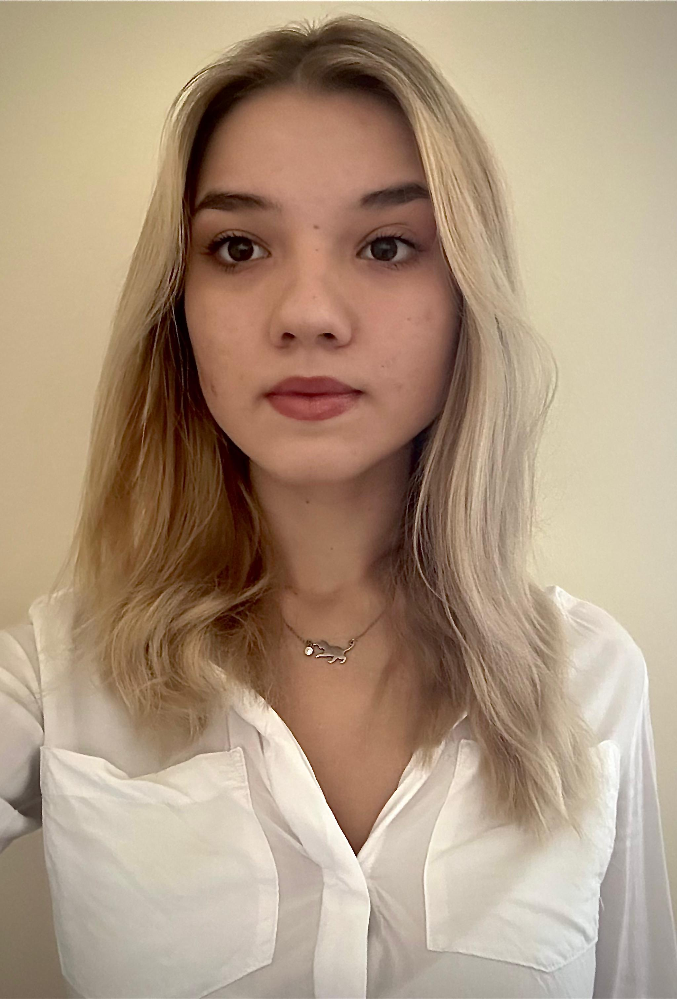

Costea Carmen Andreea
Personal WebSite

About me
- My name is Carmen, I'm 20 years old and I am student at Faculty of Automatics and Computer Sience, Politehnica University of Bucharest.
- Ever since childhood, I have been passionate about the exact sciences, with mathematics and physics always sparking my interest. This passion guided me in choosing my path in life, leading me to pursue studies in the field of automation.
- In addition to my love for the exact sciences, humanistic pursuits bring me peace during my free time. Among my passions are reading, painting, traveling, and sports. I practiced karate and MMA for 7 years, during which I won numerous national and international awards.